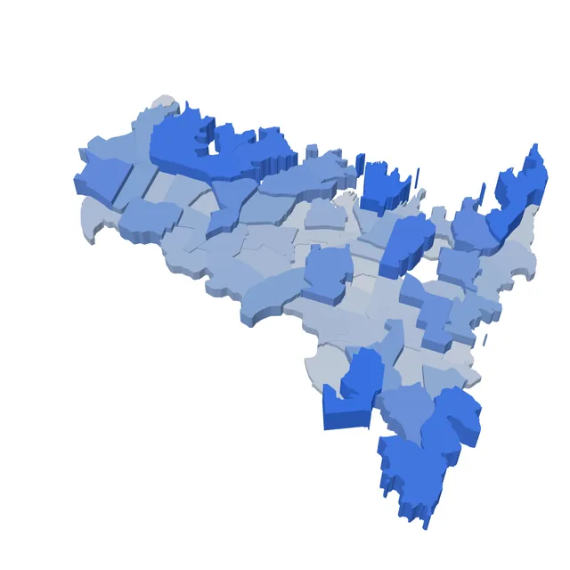

Hey, I'm Abtahee
Software Engineer
Computing student at the University of Sydney. SRE intern at Nutanix from December.
I'm Abtahee, a penultimate-year Advanced Computing student at the University of Sydney, majoring in Business Information Systems and Data Science. I graduate in late 2027.
I like building the parts of software people don't see: the schema, the sync layer, the pipeline that has to run every day. In December I start as a Systems Reliability Engineering intern at Nutanix.
- Based in
- Sydney
- Work rights
- Full Australian
- Graduating
- Late 2027
- Looking for
- SWE, SRE, data engineering
Here's what I've built. Each one has a write-up with the decisions I made and what I'd change.

Data pipeline Greater Sydney Liveability Index PostgreSQL and PostGIS database fed by a live NSW Government API. Spatial joins score 66 SA2 regions. Read the write-up Real-time web app GroupSync Group chat for student projects. I built the Socket.io sync, the client-server contracts and the SQLite schema. An AI step turns "I'll do the slides" into an action item. Next.js · Node.js · Socket.io · SQLite Read the write-upThese are what I've used on real projects.
Languages
- Python
- Java
- SQL
- R
- JavaScript
- Bash
Backend and real-time
- Node.js
- Next.js
- React
- Flask
- Socket.io
- REST APIs
- WebSockets
Data
- PostgreSQL
- PostGIS
- SQLite
- pandas
- NumPy
- ETL pipelines
- Query optimisation
Shipping
- Git
- GitHub Actions
- Vercel
- Jira
- Agile
- Dec 2026Systems Reliability Engineering Intern · Nutanix
Summer internship, starting in December.
- Mar to May 2026Research and Data Analyst Intern · Business Council for Sustainable Development Australia
Analysed 30+ parliamentary and regulatory submissions, pulling structured positions out of long documents. Rebuilt the team's briefing note templates and tracking docs.
- Aug to Dec 2025Events Coordinator · Business Information Systems Association, USyd
Brought in industry sponsors through cold outreach and turned them into ongoing partnerships.
- EarlierWarehouse Operations Associate · Amazon Australia
Worked in a high-volume fulfilment operation that runs on rates, targets and live dashboards.
Email is the quickest way to reach me. I'm in Sydney and open to SWE, SRE and data engineering internships and graduate roles.
I'm about to work in reliability, so I run this site like a small service. Every push builds on GitHub Actions and fails if the site gets slower, less accessible, or has a broken link. Lighthouse runs three times and the median has to clear 90 for performance and 95 for accessibility.
A scheduled job on GitHub Actions checks the site and logs the result. The dot on the "A" in the top corner is that check: green means the last one passed. See the status page.